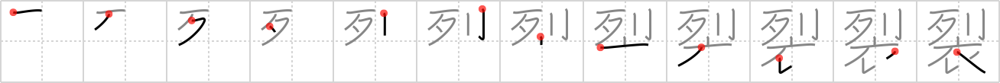

裂
← →
split

Reading:
On-Yomi: レツ — Kun-Yomi: さ.く、さ.ける、-ぎ.れ
Heisig story:
File . . . garment.
Koohii stories:
1) [aircawn] 12-3-2007(220): They tried issuing the skeleton warriors with proper garments to wear, but they kept getting split by the sharp bones or by their sabres. In the end, it was decided they look scarier naked anyway.
2) [darg_sama] 3-11-2005(107): Someone takes a sword made of bone to split the garment right down the middle. Very effective.
3) [cameron_en] 13-9-2008(81): My boner split a hole in my pants like a saber.
4) [Angrybeez] 28-8-2008(50): We should walk in single file so no one sees I split my undergarments! (Undergarments should help with position).
5) [chamcham] 30-4-2007(24): Think about what happens when you split your pants….the tear makes a line in your garment.